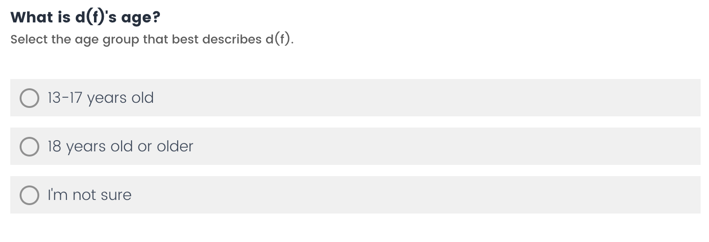
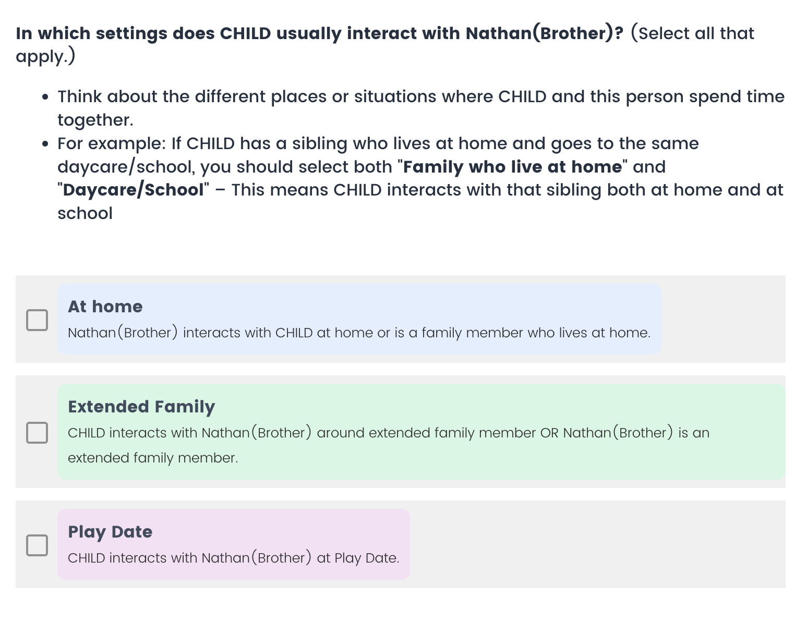

Child Social Network Questionnaire Qualtrics Survey Help Sheet (CSNQ)
Lab: Infant Learning and Development Laboratory (Woodward Lab), University of Chicago
Purpose: This document walks through the CSNQ exactly as the survey designer. Each section explains what the survey asks, why it’s there, and how responses are routed.
Table of Contents
0) Walk through the CSNQ
1) Purpose & Scope
2) Global Conventions
3) Survey Flow Overview
4) Module A — Welcome & Child Basics Demographics
5) Module B — Siblings
6) Module C — Household (Live‑at‑home)
7) Module D — Childcare / Daycare / Class
8) Module E — Other Caregivers
9) Module F — Extended Family
10) Module G — Activities 1–7 (Loop & Merge)
11) Module H — Other Regular Contacts
12) Module I — De-duplication & Confirmation
13) Demographics loops
Live at home or not?
Hours Spent with the Child
Age
Gender
Race
Languages
Interaction Mode
Interaction Contexts
Closeness
Clarification
Mapping (Who Knows Whom)
Editing Notes
14) Validation & Logic Rules
0) Walk through the CSNQ
- Child Identification
The survey begins by recording the child’s study ID.
- Child Profile
Respondents provide the child’s core demographic information once:
- Name
- Date of birth (used to calculate age in months)
- Gender
- Race/ethnicity (with detailed follow-up when relevant)
- Language exposure profile
- Zip code
- Network Listing
Respondents list the child’s close contacts across a series of categories:
- Siblings
- Household members
- Childcare providers or classmates
- Teachers
- Peers
- Other caregivers
- Extended family
- Anyone else important
- Roster Refinement
The system automatically identifies and flags potential duplicates or inconsistent entries. Respondents review these suggestions and confirm a finalized list of unique individuals.
- Per-Person Details
For each individual on the final list, respondents answer a targeted set of follow-up demographics questions.
- Complete
* This order maximizes recall, keeps screens relevant, and outputs a tidy dataset without guesswork later.
1) Purpose & Scope
This instrument collects a weekly social network for a child, covering household members, siblings (co‑resident or not), daycare/activity peers and adults, extended family, and other regular contacts.
2) Global Conventions
Tokens:
- Child name: ${q://QID4088/ChoiceTextEntryValue} (appears throughout prompts).
- Loop & Merge (LM) fields: ${lm://Field/2} = Name, ${lm://Field/3} = Relationship (used in per‑person pages).
- Embedded Activities (ED): ${e://Field/Activity1} … ${e://Field/Activity7} (seeded prior to dependency questions).
Page‑break discipline:
- Place a page break between (a) any item that sets LM/ED values and (b) any item that uses them. Otherwise tokens may resolve stale.
Numeric standards:
- Daily hours: 0–24 (integer).
- Weekly hours: 0–80 (integer).
- Reject negatives; coerce blank → missing.
Age bands (standardized):
<2, 2–5, 6–12, 13–17, 18+, I'm not sure (teacher/caregiver/adult items may omit child bands appropriately).
Force Response + Display Logic:
Avoid forcing response on a child question and gating a displayed follow‑up on the same page; move one to its own page to avoid the Qualtrics “in‑page display logic may behave unexpectedly with validation” warning.
3) Survey Flow Overview
- Welcome & Child basics (ID, name, DOB, gender, race, language, zip).
- Siblings listing
- Household listing (live‑at‑home)
- Childcare/daycare/class: attendance, type, class composition (gender, race, language); name teachers and classmates.
- Activities listing (Max of 7)
- collect contexts’ demographics and peer/adult lists per activity.
- Teachers & classroom adults: weekly hours; age band.
- Other caregivers listing
- Extended family listing
- Anyone else listing
- De‑duplication reminder & confirmation.
- Demographics information loop over people (node) generated
4) Module A — Welcome & Child Basics Demographics
A.1 Welcome block
- Purpose statement and estimated time (15–20 minutes).
A.2 Child ID — ChildID
- Free text (user can edit validation to accommodate your lab’s participant identifier format [e.g. AB230])
To add custom validation for your lab’s participant identifier format:
1. In your survey, click the question where you are asking participants to enter their lab identifier.
2. In the left-hand column, click Add Validation > Custom under the Response Requirements area.
3. In the second drop-down box, select the text entry area where participants will type their identifier. The first drop-down box should already be populated with the current question; if not, select it from the list.
4. From the third drop-down menu, choose “Matches Regex.”
In the fourth box, enter a regular expression (regex) that matches your lab’s identifier format. Examples:
- ^[A-Z]{2}[0-9]{3}$ → Two uppercase letters followed by three digits (e.g., AB230)
- ^P[0-9]{5}$ → The letter P followed by exactly five digits (e.g., P12345)
- ^[A-Z]{1}[0-9]{4,6}$ → One uppercase letter followed by 4–6 digits
This way, the survey will only accept identifiers in the correct format.
5. Choose a system default error message (e.g., “Please enter a valid ID”) or create your own custom error message that fits your lab’s instructions.
6. Click Save to apply the validation.
A.3 Child name — child_name
- Prompt: “Please enter child’s first name.”
- Used by piped text token ${q://QID4088/ChoiceTextEntryValue} globally.
A.4 Child birthdate — child_DOB
- Collect Birthdate (use date picker generated by Javascript, this will auto update each year by add the current year to the list)
- Participants select Month, Day, and Year of birth from dropdowns. After input, the system calculates the child’s age in months and displays it in a confirmation box.
- Participants must click Confirm before moving to the next page. If they do not confirm, validation prevents them from proceeding. (The confirmation box gives parents a chance to double-check that the entered information matches their child’s actual birthdate, ensuring higher-quality and reliable data)
- Derive age_in_months at runtime (EndDate − Birthdate) as save it in the background for data exportValidation box:
A.5 Child gender — child_gender
- Single select: Female; Male; Prefer not to answer; Other (specify).
- Prefer not to answer will be saved as NA in exported csv, text entry in ‘Other’ will be appended to the child_gender data field
- Text entry field is required if ‘Other’ is selected
A.6 Child race/ethnicity — child_race
- Multi‑select standard categories/Other/ Prefer not to answer
- Prefer not to answer is exclusive, meaning if this is selected, the other choices are disabled, data will be saved as NA in exported csv. Text entry in ‘Other’ will be appended to the child_race data field later
A.7 Race detail (conditional) — child_race_detail
- Trigger if Asian or Hispanic selected in A.6.
- Why do we add this detail field?
- The main race/ethnicity question (A.6) uses very broad groups like Asian or Hispanic/Latino. These categories cover many distinct backgrounds (e.g., Chinese vs. Indian, or Mexican vs. Guatemalan vs. Puerto Rican). Adding the follow-up child_race_detail field helps capture this variation so responses are more specific and meaningful for analysis, while still keeping the broad categories for comparability.
- Prompt pipes selected categories via ${q://QID4090/ChoiceGroup/SelectedChoices}.
A.8 Language category — child_lang
- The survey is designed for families who are primarily English-speaking, which is why the categories all start from an English baseline.
- We include three categories to capture differences in children’s environments:
- Monolingual: families where the child hears only English the vast majority of the time.
- Exposure: children primarily hear English, but have some limited and consistent exposure to another language (e.g., from a caregiver or activity).
- Bilingual/Multilingual: children regularly hear both English and another language(s) at a high proportion.
- This structure works across ages (infants, toddlers, children). For infants, the focus is not on spoken language but on what languages they are hearing and beginning to learn.
- The follow-up entry box for non-English languages is triggered by JavaScript, ensuring that when families select Exposure or Bilingual/Multilingual, they can specify which additional language(s) the child is exposed to.
- If ‘Exposure’ or ‘Bilingual or Multilingual’ is selected, participant can select languages from the list or add any language that was not in the list
A.9 Zip code — child_zipcode
- 5‑digit numeric. (Validation is based on US postal code)
5) Module B — Siblings
B.1 Gate — sibling_yn
- Yes/No (include step/adopted/half; different homes OK).
B.2 Free‑text list — sibling_nodes
- Collects sibling names + relationships.
- The relationship field is critical to distinguish biological siblings from step-/half-/adopted siblings.
- These data is not yet loaded into the Qualtrics data but saved in embedded data, that will be loaded into to the exporting csv later after all names are confirmed again by participant
- Each sibling entry is stored as paired fields in the embedded data:
- Sibling1Name, Sibling1Relationship
- Sibling2Name, Sibling2Relationship
6) Module C — Household (Live‑at‑home)
C.1 Gate — live_at_home_self
- If Yes, show a reminder banner to include self (live_at_home_notice).
C.2 Free‑text list — live_at_home_nodes
- Instructions: list everyone who has lived with the child in a typical week (include multiple homes).
- Each entry is stored as paired fields in embedded data:
- LiveAtHome#Name, LiveAtHome#Relationship
7) Module D — Childcare / Daycare / Class
D.1 Attendance — childcare_yn
Yes/No.
D.2 Type (multi) — childcare_type
- Categories created based on: Degnan, K. A., Henderson, H. A., Fox, N. A., & Rubin, K. H. (2008). Predicting Social Wariness in Middle Childhood: The Moderating Roles of Child Care History, Maternal Personality and Maternal Behavior. Social Development, 17(3), 471–487. https://doi.org/10.1111/j.1467-9507.2007.00437.
The class-level questions below (D.4–D.8) only appear if any of these three are selected: Day care center / Licensed family day care / Unlicensed out-of-home provider.
D.3 Start age — childcare_start_age
D.4 Class language — childcare_lang (shown if D.2 includes one of the three types)
- Text entry required for selection ‘Only on non-English language’ or ‘More than on language’
D.5 Group size — childcare_size (shown if D.2 includes one of the three types)
D.6 Class composition — ages, gender, race (shown only if childcare_size > 1)
- Ages present — childcare_child_age (multi).
- Gender make-up — childcare_gender (single).

- Race/ethnic groups — childcare_race (multi).
D.7 Teachers/adults — Teacher_nodes (shown if D.2 includes one of the three nonparental care types)
D.8 Peer nominations (depends on group size > 1)
- Gate — kids_childcare_yn: only shown if childcare_size > 1.
- List — kids_childcare_node: only first names are required for school kids.
Why this logic?
- If there’s only one child in the group, questions about other kids don’t apply.
- The class language/size/composition describe the setting; teacher names and peer nominations create people we’ll ask details about later
8) Module E — Other Caregivers
F.1 Gate & list — caregivers_yn → Caregiver_nodes
Include nannies, babysitters, grandparents acting as caregivers, etc.
9) Module F — Extended Family
G.1 Gate & list — extendedfamily_yn → extended_family_node
Include family regularly seen and not already listed.
10) Module G — Activities 1–7 (Loop & Merge)
G.1 Gate — contexts_yn
G.2 Activities free‑text list — context_list
- Capture up to 7 activities (Activity 1…7).
- Then: name_processing_6 + Activity_loading seed ${e://Field/Activity1..7} for LM. Must be on a page before any dependent questions. (They load embedded data into Qualtrics’ data)
G.3 Per‑activity pages (repeat for each Activity i that contained something)
- Other kids? — act1_othekids (Yes/No; if Yes, number).
- Child ages present — act1_child_age (multi from different bin).
- Gender makeup — act1_gender.
- Race/ethnicity — act1_race.
- Contact mode — act1_contact (in‑person/virtual/both).
- Language used — act1_lang (open text). (Written by Javascript)
- Adults gate — act1_adults_yn (None/List).
- Adults list — act1_adults (name + relationship).
- Friends gate — act1_kids_yn (None/List).
- Friends list — act1_kids (first names).
11) Module H — Other Regular Contacts
H.1 Gate & list — anyoneelse_yn → anyoneelse_nodes
Neighbors, family friends, etc., not yet mentioned, seen regularly in the past month.
12) Module I — De-duplication & Confirmation
The Duplicate Auto-Check is a custom-built review screen that helps prevent duplicate entries in the network roster. This feature is critical for data quality because parents sometimes re-enter the same person in multiple categories
- The survey uses JavaScript + string distance algorithms to automatically scan names as they are entered.
- Potential duplicates are grouped (e.g., two entries both named Amy).
- Review Screen (shown above):
- Participants (or researchers in review mode) are presented with pairs of potentially duplicate entries.
- Contextual information (e.g., “Living at home • Mom” vs. “Any other important people • Mom”) is shown to help decide if they are the same person.
- ✅ Same Person merges the entries into one unique node.
- ❌ Different People keeps both records.
- Reminder card: “Only keep people with frequent contact.”
- Name_filloutsurvey
- Network review screen: it gives respondents one last chance to fix spelling errors, add missed entries, or delete duplicates to ensure only finalized individuals are carried into the detailed demographics loop structure.
- Respondent identifying: this records the relationship between the respondent and the child
13) Demographics loops
Once the network roster is finalized (after the review screen and duplicate auto-check), the survey enters the demographic loops. Here, each individual listed in the network is presented in turn, and the respondent answers a set of standardized questions.
These loops are built with Qualtrics Loop & Merge, pulling in the person’s name and relationship from the roster (${lm://Field/1}, ${lm://Field/2}) so each page feels personalized.
(* Because respondent may not be familiar with all individuals listed, therefore we included ‘I’m not sure’ as an option which is saved as ‘NA’ in the final data)
Below is a breakdown of all questions included in the loops, with distinctions across categories.
Live at home or not?
- Siblings:
“Does this sibling live with your child?” (Yes/No).

- If Yes → additional questions on weekday and weekend daily hours.
- If No → one question on total weekly hours.
- Live-at-home nodes: Residence is auto-set to Yes.
- Other categories: This question is not asked.
Hours Spent with the Child
- If living at home → hours per day, split by weekday and weekend.
- If not living at home → total weekly hours.
- Live-at-home (non-sibling): hours per day, split by weekday and weekend.
- All others (teachers, peers, caregivers, extended family, activity peers/adults): One question on total weekly hours they spend with the child.
Age
- Respondents have to enter the birth month and year.
- JavaScript calculates age in months automatically in the background for respondent’s reference
- Children (school kids, activity kids):
- Adults (teachers, caregivers, activity adults):
 - For nodes in Liveathome, Extended Family, or Anyone Else
Kin
- This question is not asked in sibling node looping because kinship relationship is presumed.
- This however is asked in other node looping including liveathome, teacher, schoolkid, caregiver, extended family, activity adult, activity kid, and anyone else.
Gender
- Options are consistent for all categories:
- ‘I’m not sure’ is saved as ‘NA’
Race
Languages
Interaction Mode
Interaction Contexts
- Display logic was set so daycare will not appear on the list if the child attended daycare; same with activities.
- Each person is linked to a default context, auto-checked:
- Sibling → Home
- Live-at-home → Home
- Teacher / Schoolkid → Daycare or School
- Extended family → Family context
- Activity peers/adults → The specific activity where they were listed
- Respondents can select additional contexts this person interacts with the child if relevant.

Closeness
Each loop includes a set of relationship quality questions used in Burke (2022) to assess node’s closeness with the child:
Clarification
- Optional free-text box is here to capture unique details respondent might want to include
Mapping (Who Knows Whom)
- Respondents are asked: “Which of the other listed people does [Name] know?”
- JavaScript Logic:
- If Person A is marked as knowing Person B, then Person B’s page will already have Person A pre-checked.
- All ties are assumed bidirectional.
- These connections are used for:
- Network density
- Graph visualizations of the child’s network.
Editing Notes
- ✅ You may safely edit: Question text, explanatory notes, examples.
- ❌ If not needed, do not edit (with caution): Export tags, anything operating on javascript including age-calculation, language collection question, and mapping logic.
14) Validation & Logic Rules
- Numeric validation: integers only; min/max per standards; show helper text (e.g., “Enter a whole number”).
- Required vs Optional: Core network listing required; free-text clarifications optional.
- Display Logic warnings: Do not put gated follow‑ups and force‑required parent on the same page.
- Token freshness: Place a page break between ED/LM seeding and any downstream uses (notably sibling_context and per‑activity titles).
- De‑duplication: Use the Reminder pass to clean up repeated names across siblings/household/activities/extended family.